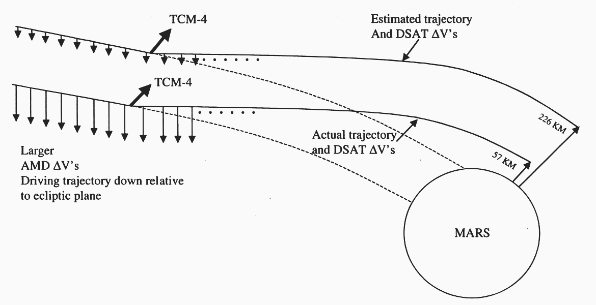
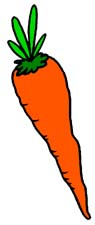
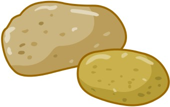

Léon Gondelman · Aalborg University Copenhagen · 2026

Lockheed Martin's program writes impulses in pound-force seconds
JPL's program reads them as newton-seconds
a factor 4.45: 57 km above Mars instead of 226 km, and the spacecraft is lost
what would have caught it?
one type for each unit: the mix becomes a type error, reported before the run
an operation applied to a value of the wrong type:
"5" + 37do we get
"537"? (Java, Scala, Kotlin)
+
and what does this one give?
37 / "5"a type names a collection of values, together with the operations defined on them
| type | values | operations |
|---|---|---|
int | \(\dots, -1, 0, 1, 2, \dots\) | \(+\), \(\times\), \(<\) |
bool | true, false | conditional, negation |
string | "", "a", "ab", \(\dots\) | concatenation, length |
| \(\mathtt{int} \rightarrow \mathtt{bool}\) | the functions from integers to Booleans | application |
a type error is an operation applied to a value on which it is not defined:
length(42)1 + length42("abc")
the intuitive reading is an approximation: a type is assigned to an expression, in the text of the program, before any value exists
if true then 1 else "a" evaluates to the integer 1, and OCaml gives it no type: typing judges the text, not one run“A type system is a tractable syntactic method for proving the absence of certain program behaviors by classifying phrases according to the kinds of values they compute.” Pierce, 2002
“Type structure is a syntactic discipline for enforcing levels of abstraction.” Reynolds, 1983
can a checker accept exactly the blue set?
no: whether a program ever commits a type error is undecidable
a type checker is
theory
practice
1969Howard, after Curry: a proposition is a type, a proof is a program
1988Coquand, Huet: the calculus of constructions
a kernel, far smaller than the system, checks the proof, whoever or whatever wrote it: trust goes to the kernel, the logic and the statement
1989Coq, now Rocq: a proof assistant on that calculus
2005the four-color theorem, checked in Coq (Gonthier, Werner)
2009CompCert: a compiler for a large subset of C, proved correct in Coq (Leroy)
2013Lean (de Moura)
2024AlphaProof: proofs found by a machine, checked by Lean
val name: String? = lookup(id)
name.length // rejected
name?.length // acceptedKotlin: name may be absent; a direct access is rejected, an access that tests for absence is accepted
let v = vec![1, 2, 3];
let first = &v[0];
drop(v); // rejected
println!("{}", first);Rust: first refers into v; freeing v while it is still referred to is rejected
let mut n = 0;
thread::scope(|s| {
s.spawn(|| n += 1);
s.spawn(|| n += 1); // rejected
});Rust: two threads increment the same n; the second one is rejected
theorem swap (p q : Prop)
(h : p ∧ q) : q ∧ p :=
⟨h.2, h.1⟩Lean 4: the statement “\(p \wedge q\) implies \(q \wedge p\)” as a type, and its proof as a program that the checker accepts
if we now add two arbitrary expressions
e1 + e2how can we decide whether this is legal and which operation to perform?
the answer is typing, a program analysis that binds types to each sub-expression, to rule out inconsistent programs
some languages are dynamically typed: types are bound to values and are used at runtime
examples: Lisp, PHP, Python, Julia
other languages are statically typed: types are bound to expressions and are used at compile time
examples: C, C++, Java, OCaml, Rust, Go
consider the following C and Python code snippets:
int id(int num) {
return num; }
void main(){
printf("%d", id(42,42));}def id(num):
return num
print(id(42,42))the C code fails at the compile-time (compilation error) error: too many arguments to function 'id'
the Python code compiles to the VM and fails at runtime (runtime error) TypeError: id() takes 1 positional argument but 2 were given
well-typed programs cannot “go wrong”
int f(int x) { int y = ((x:int)+(1:int):int); ... }int f(int x) { int y = x+1; return y; }auto in C++ 11, var in Java 10)
int f(int x) { var y = x+1; return y; }fun x -> x+1a type system is safe when no program that it accepts applies, at run time, an operation to a value of the wrong type
safety is a property of the pair (type system, semantics): it is a theorem, and it has to be proved
does a program accepted by the compiler run without a type error?
in C, no: its type system is not safe; block 2 states the property formally
#include <stdio.h>
union { long n; char *s; } u;
int main(void) {
u.n = 42;
printf("%s\n", u.s);
return 0;
}accepted by the C compiler without a warning; the run reads a text at address 42 and crashes
break and continuea value is a term whose evaluation is finished
a step \(e \step e'\) is defined by three rules (small-step operational semantics)
with \(n\) an integer, \(b \in \{\mathtt{true}, \mathtt{false}\}\) and \(op \in \{+, <, \dots\}\)
stuck terms, neither a value nor able to step: \(\quad 1 + \mathtt{true} \qquad 1~2 \qquad \mathtt{true}~(\lam{x} x)\)
we introduce types, with the following abstract syntax
one possibility: no annotation, the syntax as before
the other possibility: each binder annotated with its type
evaluation ignores the annotations: \((\lam{x : \tau} e)\, v \step \subst{e}{x}{v}\), and \(\lam{x : \tau} e\) is a value
what are the implications of which version we choose?
the type of a variable is given by a typing environment \(\Gamma\)
(a function from variables to types)
the typing judgment is written
and reads “in typing environment \(\Gamma\), expression \(e\) has type \(\tau\)”
\(\Gamma, x:\tau\) is \(\Gamma\) in which \(x\) now has the type \(\tau\) (an earlier type of \(x\) is hidden)
inference rules define \(\Gamma \vdash e : \tau\)
a constant has its type in every environment
a variable receives the type that the environment records for it
with \(\Gamma = \{ x \mapsto \mathtt{int} \}\)
which rule could give a type to \(1 + \mathtt{true}\)?
\(1 + \mathtt{true}\) has no type
with \(\Gamma = \{ f \mapsto \mathtt{int} \rightarrow \mathtt{bool} \}\)
in which environment is the body typed?
1. Write typing derivation of \( \emptyset \vdash (\lam{x \, : \mathtt{bool}} x)\, \mathtt{true} : \mathtt{bool}\)
and \( \emptyset \vdash \lam{x \, : \mathtt{int}} \lam{y \, : \mathtt{int}} x < y : \mathtt{int} \rightarrow \mathtt{int} \rightarrow \mathtt{bool}\)
2. Are \((\lam{x \, : \mathtt{bool}} x)\) and \((\lam{x \, : \mathtt{int}} x)\) the same programs?
3. Redesign typing rules for the \(\lambda\)-calculus without explicit type parameters. What is the type of the identity function \(\lam{x} x\) now?
4. Write typing derivation for \( \emptyset \vdash \lam{x} \lam{y} x\, y : \tau\), for a type \(\tau\) to find
5. Define type-annotation erasure function \(\mathtt{erase}(\cdot)\) and state its correctness theorem.
6. What does it mean for a program \(e\) to be well-typed in an empty context, i.e. \( \emptyset \vdash e : \tau\) for some type \(\tau\)?
7. Is there any context \(\Gamma\) and type \(\tau\) such that \(\Gamma \vdash x\, x : \tau\)?
a function \(\efun{x}{e}\) carries no annotation, and a primitive stands before its argument: \(+\,(x, 1)\)
| \(e\) | \(::=\) | \(x\) | identifier |
| \(|\) | \(c\) | constant (1, 2, …, true, …) | |
| \(|\) | \(op\) | primitive (\(+\), \(\times\), fst, …) | |
| \(|\) | \(\efun{x}{e}\) | function | |
| \(|\) | \(e~e\) | application | |
| \(|\) | \((e,e)\) | pair | |
| \(|\) | \(\elet{x}{e}{e}\) | local binding |
we are given simple types, whose abstract syntax is
| \(\tau\) | \(::=\) | \(\mathtt{int} ~|~ \mathtt{bool} ~|~ \dots\) | base types |
| \(|\) | \(\tau \rightarrow \tau\) | functions | |
| \(|\) | \(\tau\times\tau\) | pairs |
the typing judgment that we are going to define is written
and is read “in the environment \(\Gamma\), the expression \(e\) has type \(\tau\)”
the environment \(\Gamma\) associates a type \(\Gamma(x)\) with every variable \(x\) that is free in \(e\)
\(\Gamma+x:\tau\) is the environment \(\Gamma'\) defined by
\(\Gamma'(x) = \tau\) and \(\Gamma'(y)=\Gamma(y)\) otherwise
on the other hand, we cannot type the program \(1~2\)
nor the program \(\efun{x}{x~x}\)
since \(\tau_1=\tau_1\rightarrow\tau_2\) has no solution (types are finite)
we can show that
but also
beware: this is not polymorphism
for a given occurrence of \(\efun{x}{x}\) we must choose a type
thus, the term \(\elet{f}{\efun{x}{x}}{(f~1,f~\mathtt{true})}\) is not typable
because there is no type \(\tau\) such that
on the other hand,
is typable (exercise: show it)
in particular, we cannot give a single type that is satisfactory for a primitive such as fst; we would have to choose between
but we can instead give a typing rule
for the application of fst:
likewise for snd; \(\times\) has the type of \(+\)
and one rule for each place where a step is taken inside a term:
when we type \(\efun{x}{e}\), how do we find the type to give to \(x\)?
this is exactly the difference between the typing rules, which define the ternary relation
and the type-checking algorithm which checks that a given expression \(e\) is indeed typable in a given environment \(\Gamma\)
typ and expression; the parameter of Fun carries its typetype_expr: one case for each typing rulethe slides that follow show the same code
only the parameters of functions are annotated
type typ =
| Tint
| Tarrow of typ * typ
| Tproduct of typ * typtype expression =
| Var of string
| Const of int
| Op of string
| Fun of string * typ * expression
| App of expression * expression
| Pair of expression * expression
| Let of string * expression * expressionFun carries the type of its parameter
the environment \(\Gamma\) is a persistent map from names to types (session 2)
module Smap = Map.Make(String)
type env = typ Smap.tSmap.add x ty env returns a new map and leaves env unchanged: \(\Gamma, x : \tau\)
lookup and insertion in \(O(\log n)\): the map is a balanced tree
let rec type_expr env = function
| Const _ -> Tint
| Var x -> Smap.find x env
| Op "+" -> Tarrow (Tproduct (Tint, Tint), Tint)
| Pair (e1, e2) ->
Tproduct (type_expr env e1, type_expr env e2)one case of the function for each typing rule
where is a type checked against another one? not here: these cases only compute a type
for a function, the type of the parameter is given
| Fun (x, ty, e) ->
Tarrow (ty, type_expr (Smap.add x ty env) e)for a local binding, it is computed
| Let (x, e1, e2) ->
type_expr (Smap.add x (type_expr env e1) env) e2the map is persistent: after the body, env is still the environment without x
the only checks are in the application
| App (e1, e2) ->
begin match type_expr env e1 with
| Tarrow (ty2, ty) ->
if type_expr env e2 = ty2 then ty
else failwith "error: argument of wrong type"
| _ ->
failwith "error: function expected"
endthe function part must have an arrow type, and the argument the type it expects
let f = fun x:int -> +(x, 1) in f 2
# typeof
(Let ("f",
Fun ("x", Tint, App (Op "+", Pair (Var "x", Const 1))),
App (Var "f", Const 2)));;- : typ = Tintfun x:int -> x x
# typeof (Fun ("x", Tint, App (Var "x", Var "x")));;Exception: Failure "error: function expected".(+ 1) 2
# typeof (App (App (Op "+", Const 1), Const 2));;Exception: Failure "error: argument of wrong type".a language may use both static and dynamic typing
Object o = "abc";
Integer n = (Integer) o;accepted by the compiler: an Object may be an Integer
the cast is checked at run time: ClassCastException
Object[] a = new String[1];
a[0] = 42;accepted by the compiler: an array of String is an array of Object
the store is checked at run time: ArrayStoreException
each object carries its class at run time, so the check is possible
Mars Climate Orbiter Mishap Investigation Board, Phase I Report, NASA, 10 November 1999
the report prints no source code